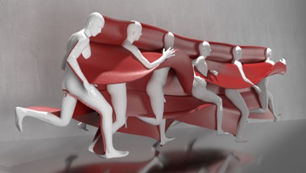

La visualisation 3D au service de l'entraînement des athlètes

La plupart des sportifs ont de nos jours recours à l’analyse vidéo pour être le plus compétitif possible, que ce soit pour analyser les tactiques d’adversaires, ou pour analyser les gestes des meilleurs et les reproduire, voire les améliorer. Cette compréhension du mouvement est nécessaire pour trouver le meilleur angle pour lancer une balle ou le meilleur positionnement au cours d’un 100m. Si de simples vidéos peuvent fournir un modèle en 2D peuvent fournir une bonne visualisation des mouvements, ce peut être parfois insuffisant.
Récemment, cependant, des chercheurs du laboratoire d'informatique et d'intelligence artificielle du MIT (CSAIL) ont trouvé un moyen de mieux comprendre ces mouvements complexes. Le nouveau système utilise un algorithme qui peut prendre des vidéos en 2D et les transformer en "sculptures de mouvement" imprimées en 3D qui montrent comment un corps humain se déplace dans l'espace.
En plus d'être une visualisation esthétique intrigante de la forme et du temps, le système "MoSculp" pourrait permettre une étude beaucoup plus détaillée du mouvement pour les athlètes professionnels, les danseurs ou toute personne souhaitant améliorer ses aptitudes physiques.
Les sculptures en mouvement étant en 3D, les utilisateurs peuvent utiliser une interface informatique pour naviguer dans les structures et les voir de différents points de vue, révélant ainsi des informations relatives au mouvement inaccessibles du point de vue original. En mettant la sculpture 3D de son propre mouvement à côté de celle d’un champion de la discipline, on peut bien plus facilement détecter où sont les différences et les corriger.
Lors d'études sur les utilisateurs, les chercheurs ont constaté que plus de 75 % des sujets estimaient que MoSculp offrait une visualisation plus détaillée pour l'étude du mouvement que les techniques de photographie standard.
Actuellement, le système n'utilise que des scénarios pour une seule personne, mais l'équipe espère bientôt étendre le système à plusieurs personnes. Cela pourrait permettre d'étudier des choses comme les troubles sociaux, les interactions interpersonnelles et la dynamique d'équipe.